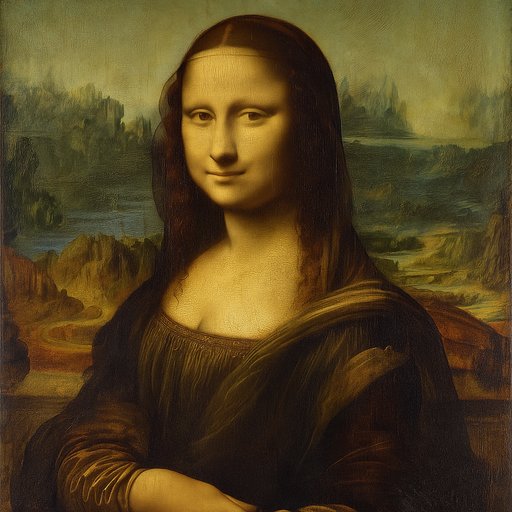
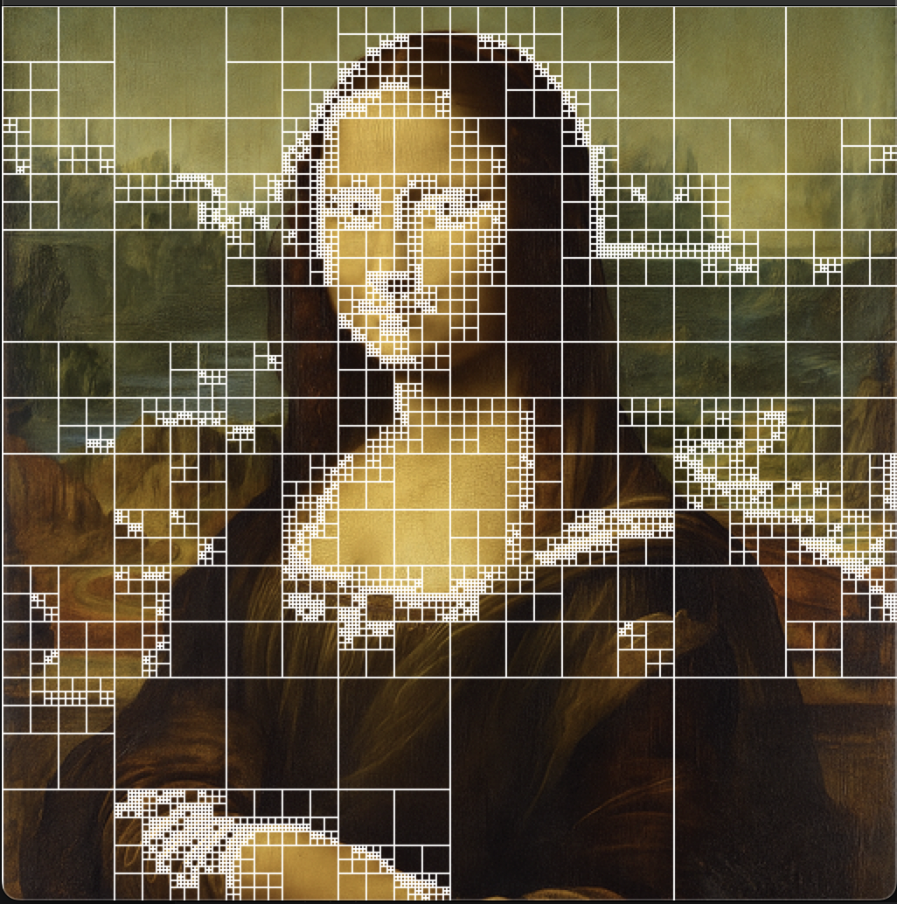

Education and Experience
I’m a recent master’s graduate from USC with an M.S. in Computer Science. Prior to that, I was a Mechanical Engineer for 5 years. and hold a B.S. in Mechanical Engineering from Penn State University.
I’m a recent master’s graduate from USC with an M.S. in Computer Science. Prior to that, I was a Mechanical Engineer for 5 years. and hold a B.S. in Mechanical Engineering from Penn State University.
I am interested in machine learning, web development, computer graphics, and game development.
Languages: C, C++, Java, Python
Technologies: HTML, CSS, JavaScript, Git
Libraries: Numpy, Pandas, Pytorch, OpenCV

